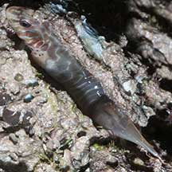
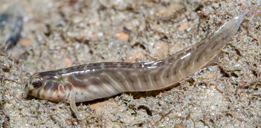

|
|
| fishes text index | photo index |
| Phylum Chordata > Subphylum Vertebrate > fishes > Family Blennidae |
| Oyster
blenny Awaiting identification Family Blenniidae updated Sep 2020 Where seen? This small elongated fish is sometimes seen hidden in crevices on encrusted rocks, seawalls and rubble, even out of water at low tide. Features: About 5cm. Body elongated flattened sideways, head rounded. Fine white lines along the body length. |
 East Coast Park, Aug 09 |
 Elongate oyster-blenny (Omobranchus elongatus) Big Sisters Island, Feb 17 Photo shared by Marcus Ng on facebook. |
| Oyster blennies on Singapore shores |
On wildsingapore
flickr
|
| Other sightings on Singapore shores |
References
|